Создание игр в Roblox Studio
Программирование на Lua. События - Часть 2
Введение
Это занятие продолжает тему предыдущего. Оно полностью посвящено работе с событиями в более сложных и интересных игровых механиках. Это заключительное занятие по основам программирования в LUA :)
Как говорилось ранее, события используются для того, чтобы создавать объекты, самостоятельно взаимодействующие с игроком и окружающим миром.
В этом занятии мы посмотрим на применение событий для создания специфичных ситуаций и механик, а именно: создание взрывающихся объектов, телепорта, триггеров, а также разберем основу работы с массивами.
Продвинутое применение событий
Задание 1 - Взрывающаяся дверь. Создание объектов в процессе игры
В этом задании нужно написать код, который будет взрывать и уничтожать дверь, открывая проход в следующую комнату, для этого мы будем использовать эффект взрыва Explosion.
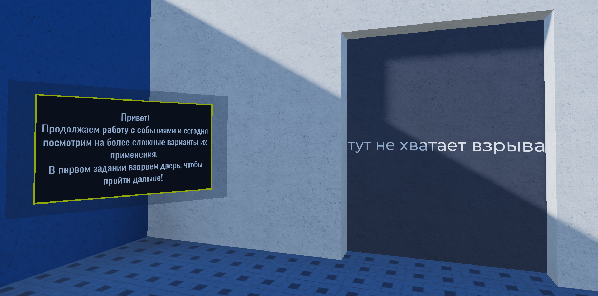Вы могли уже встречаться с ним ранее, на занятии, посвященном эффектам, но, скорее всего, он работал неправильно. Это связано с тем, что эффект взрыва необходимо создавать и настраивать при помощи программного кода.
Создадим дочерний скрипт для двери и назовём его ExplosionScript. В первую очередь зададим все необходимые переменные, обработчик события и его функцию:
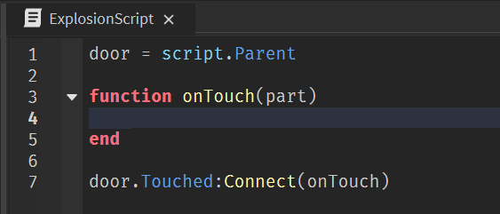Следующим шагом создадим взрыв, то есть эффект Explosion. Чтобы сделать это при помощи программного кода, необходимо обратиться к главному классу Instance и создать новый объект заданного типа.
Это делается при помощи конструкции Instance.new(). В скобках метода new() необходимо указать тип создаваемого объекта. С помощью этого метода мы можем создавать любые объекты во время игры.
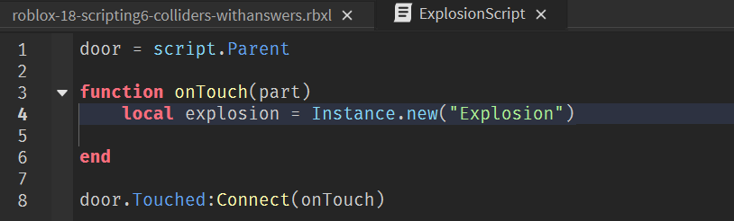При создании взрыв будет расположен в точке начала мировых координат, то есть его параметр Position будет установлен на (0.0.0).
Поэтому в первую очередь перенесем взрыв в координаты двери, после чего сделаем его дочерним объектом workspace, это необходимо для корректной работы скрипта:
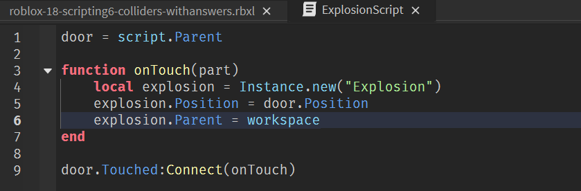Запустим игру в режиме Run и проверим, работает ли скрипт. В момент запуска дверь взрывается, но физически дверь останется на месте. Добавим команду для уничтожения двери с помощью метода Destroy().
Также добавим визуальный эффект и небольшое ожидание перед взрывом, чтобы игрок успел отойти. Для этого в функции напишем команды изменения цвета двери на красный, а также время ожидания в 2-3 секунды.
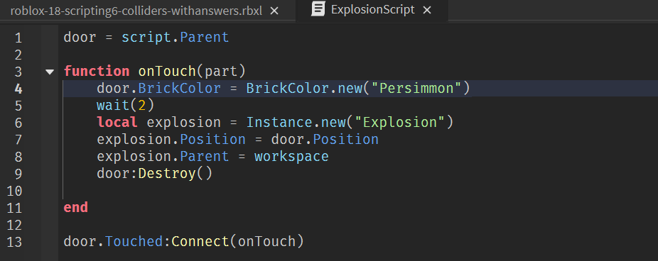Базовая часть скрипта готова! Если оставить код в текущем состоянии, событие взрыва и уничтожения двери вызовется касанием любого объекта в игре. Чтобы этого избежать, добавим конструкцию для отсеивания касаний любых объектов кроме игрока, пройденную в предыдущем занятии.
Найдём у коснувшихся объектов компонент Humanoid и выполним реакцию только в том случае, если он будет успешно найден (не будет равен значению nil):
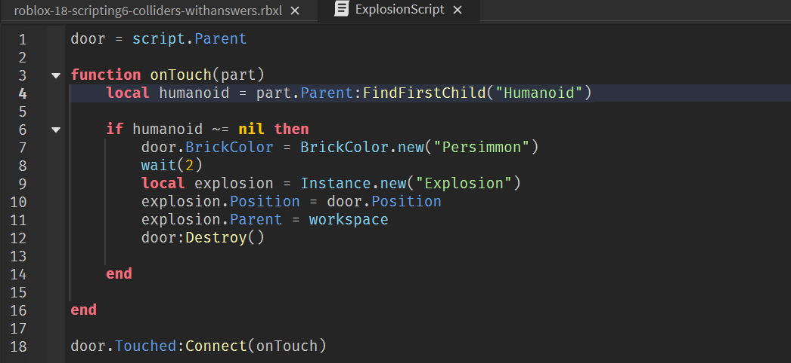Готово!
Задание 2 - Телепорт
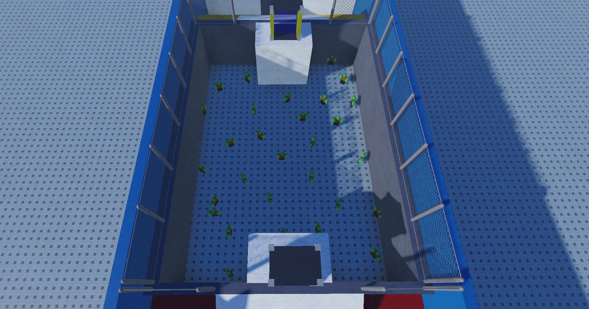В этой задаче вам нужно попасть из одной части комнаты в другую, но есть проблема - между входом и выходом находится непроходимое пространство с огромным количеством зомби. Для того, чтобы перенестись над ними, нам предстоит написать скрипт телепорта. Поднявшись по лестнице, можно найти два одинаковых объекта на противоположных сторонах комнаты, это и есть телепорты.
У этого задания есть две версии: полегче и посложнее. Hапишем сперва версию полегче.
Логика скрипта телепорта достаточно проста: при касании он изменяет координаты персонажа с текущих на координаты второго телепорта. Однако, этот скрипт должен работать одновременно с двумя телепортами.
В окне Explorer найдём группу TeleportSystem. Внутри нее есть два одинаковых объекта - Teleport и Teleport2. В каждом из них есть дочерняя деталь Gate - это та самая деталь, которая должна переместить игрока от одного телепорта к другому.
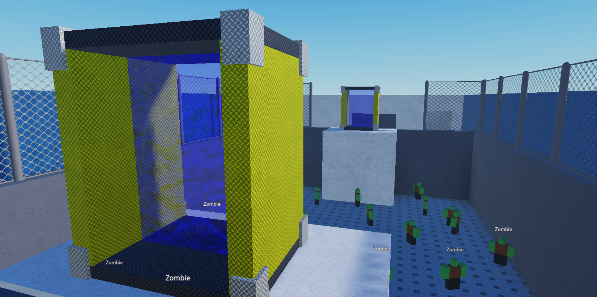В группе TeleportSystem создадим дочерний скрипт TeleportScript. Зададим необходимые переменные, обработчики событий и их функции:
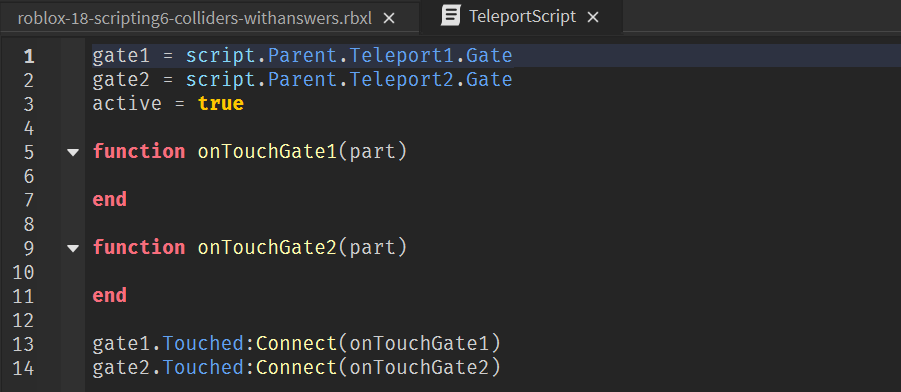Перед написанием скрипта перемещения персонажа из одной точки в другую, необходимо проговорить важные ограничения Roblox Studio в этой механике. Любой персонаж - это группа объектов, а у групп нет параметров Position, Scale и Rotate, поэтому переносить его нужно с помощью дочерних объектов - частей тела. Но если перенести персонажа за любую из частей тела, персонаж умрёт, так как мы буквально разберём его на части.
Для работы с трансформациями персонажа или любого другого живого существа в Roblox Studio существует специальная деталь, которая называется HumanoidRootPart.
Чтобы найти её, раскроем в Explorer группу любого гуманоидного объекта, например, зомби. Внутри найдём нужную деталь.
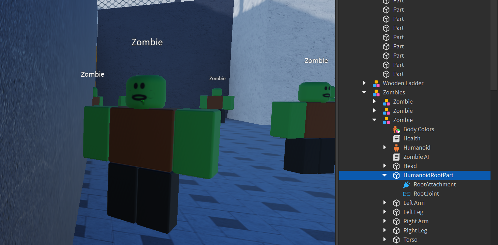HumanoidRootPart невидима и у неё нет физического соединения с другими частями тела. Её единственная функция - хранить параметры трансформации персонажа. Именно благодаря этой детали мы сможем перенести персонажа, изменив её параметр Position. Любой персонаж полностью перемещается вслед за HumanoidRootPart.
Вернёмся к скрипту. Сперва добавим фильтрацию по объектам - нам необходимо сделать так, чтобы телепорт переносил только гуманоидных персонажей. Добавим уже знакомую конструкцию:
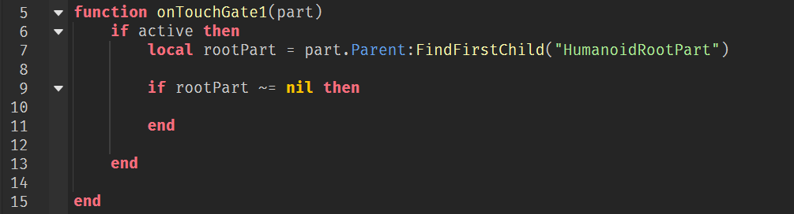Теперь, когда мы точно уверены, что объекта Gate коснулся именно персонаж, добавим команды, переносящие его из положения Teleport1 в положение Teleport2, используя координаты детали HumanoidRootPart:
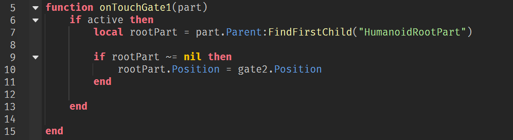Этого кода достаточно, дверь автоматически откроется, как только игрок коснётся пола перед выходом из локации. Но давайте добавим возможность обратного переноса в Teleport1.
Добавим функцию, переносящую персонажа из второго телепорта в первый и соответствующий обработчик события. Для этого просто скопируем функцию первого телепорта и поменяем точки назначения местами.
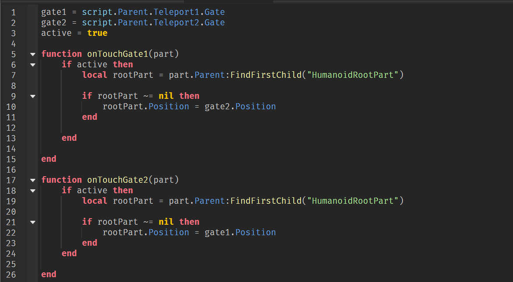Если попробовать воспользоваться телепортами сейчас, персонаж будет непрерывно перемещаться между первым и вторым телепортом без возможности из него выйти.
Для корректной работы этого скрипта добавим паузу между срабатыванием событий, то есть добавим функцию debounce():
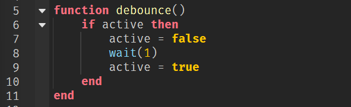Добавим вызов функции и завершим программу! Финальный код:
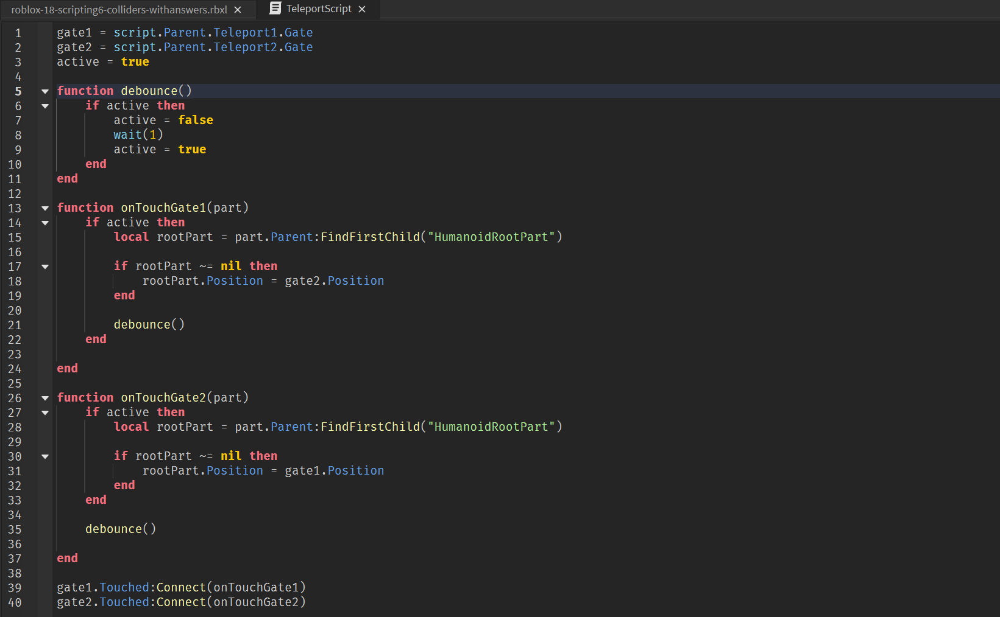Теперь, благодаря паузе между срабатываниями обработчиков события, мы можем переместиться из одного телепорта к другому и обратно через некоторое время.
Задача решена!
Коллайдеры
Задача 3 - Основы работы с коллайдерами
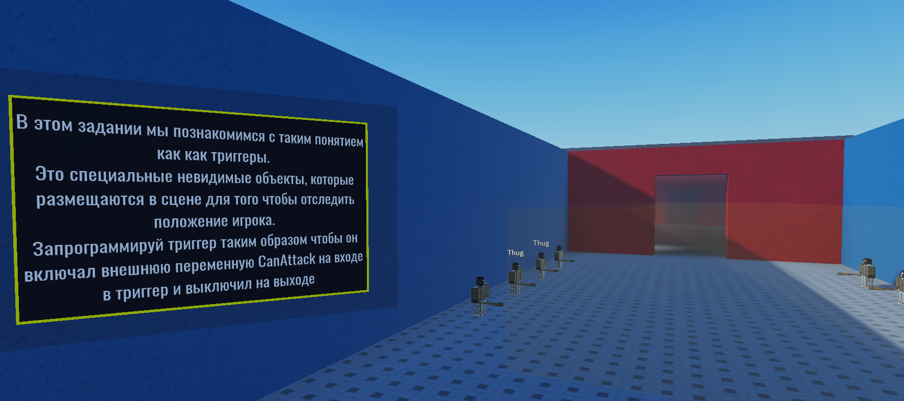Здесь необходимо написать скрипт, активирующий и деактивирующий бандитов в комнате при входе в определённую область. Для этого используется специальный невидимый объект, который называется "триггер" или "коллайдер".
Коллайдеры - одна из самых используемых техник в играх. С их помощью игра может отслеживать положение игрока и выполнять какие-то действия в зависимости от его нахождения в заданных зонах.
Например, когда в игре вы заходите в огонь, на самом деле огонь не наносит вам урона. Внутри объекта "огонь" находится небольшая область, которую игрок не видит во время игры. Как только вы в неё попадаете, запускается скрипт, наносящий какое-то количество урона в секунду. Этот урон будет наноситься вам, пока вы не выйдете из зоны огня, то есть не выйдете из коллайдера.
При помощи коллайдеров реализовывается огромное количество различных интерактивных объектов. Чтобы открыть какой-нибудь сундук или дверь в игре, вам необходимо подойти к нему спереди на определенное расстояние, чтобы появилась кнопка "открыть". На самом деле перед любым таким сундуком находится невидимый коллайдер, который позволяет активировать функцию "открыть сундук" только если вы находитесь внутри него.
Чтобы начать разговор с неигровым персонажем, вам также нужно подойти к нему на определённое расстояние. Как вы уже поняли, вокруг этого персонажа находится коллайдер, включающий реакцию, только если вы находитесь достаточно близко к нему.
Разберёмся, как устроена эта задача. В комнате находятся бандиты, которые начинают преследовать и атаковать игрока, только если включена специальная глобальная переменная CanAttack, найдите её в окне Explorer. По умолчанию эта переменная выключена, её значение установлено в положение false, то есть бандиты не будут вас атаковать.
Цель этой задачи - написать программный код, включающий и выключающий эту переменную в зависимости от нахождения игрока внутри коллайдера. Для этого мы будем использовать новый вид событий - TouchEnded. Это парное событие для события Touched, происходящее в момент, когда объект перестаёт регистрировать касания. В нашем случае - когда игрок выходит из коллайдера.
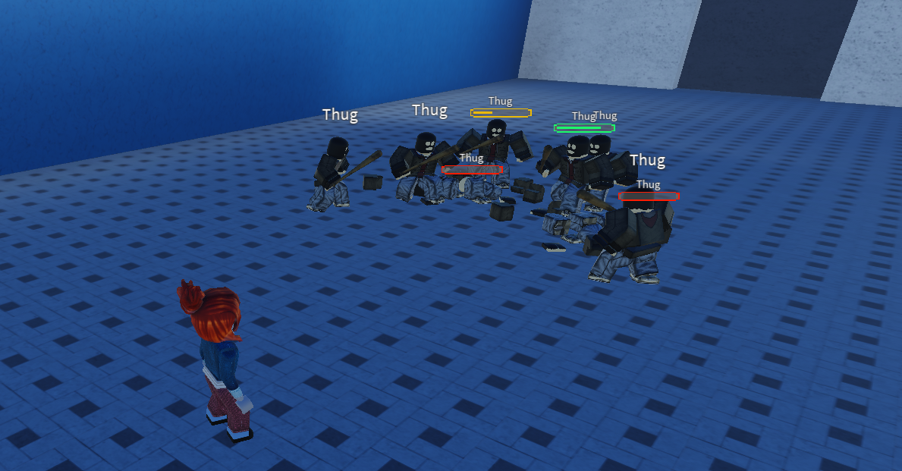Найдём объект TriggerThugs - это коллайдер, с которым мы будем работать. Создадим для него дочерний скрипт и зададим необходимые переменные и функции для каждого события:
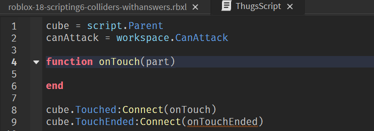В первую очередь, как и в предыдущих задачах, отфильтруем ложные срабатывания - сделаем так, чтобы событие происходило, только когда коллайдер пересекается с игроком, то есть гуманоидным объектом.
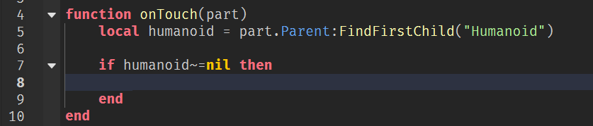Теперь добавим действия. После того, как мы убедились, что событие вызвал именно Humanoid, мы можем изменить значение переменной canAttack, таким образом включив бандитов:
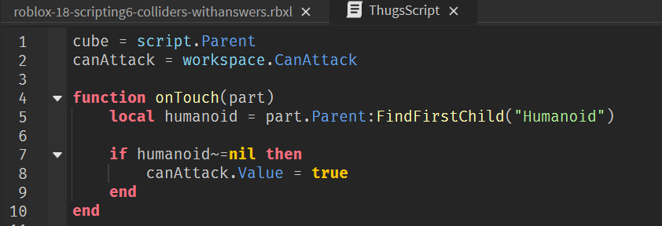Следующим шагом напишем функцию для выхода из коллайдера. Она выполняет такие же действия, единственное отличие - значение переменной bool. Скопируем текст функции oneTouch, вставим его в функцию onTouchEnded и поменяем значение true на false:
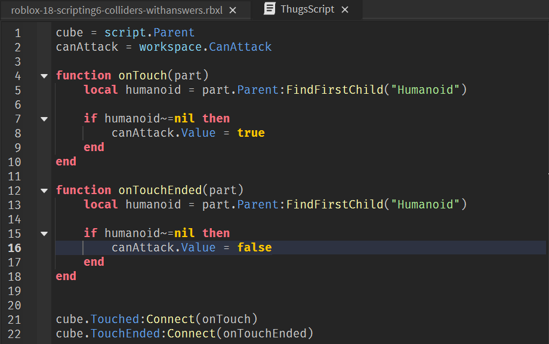Запустим игру и войдём в коллайдер. Сейчас всё будет работать, однако мы столкнёмся с тем, что бандиты будут случайным образом начинать и переставать идти, иногда будут дёргаться на месте, и скрипт будет работать не очень правильно.
Это связано с тем, что внутри бандитов, как и внутри нашего игрового персонажа, находится компонент Humanoid. Из-за этого скрипт проверяет написанное в нём событие, убеждается, что через него прошёл гуманоидный объект бандит и, как и написано, изменяет своё значение на true, активируя и деактивируя бандитов.
Чтобы избавиться от этой проблемы, допишем ещё одно условие.
Нужно убедиться, что коллайдер пересечён не бандитом. Для этого мы можем посмотреть на имя родительского объекта детали, пересёкшей коллайдер. У каждого бандита это имя будет "Thug", и мы можем дополнительно отсеять и их:
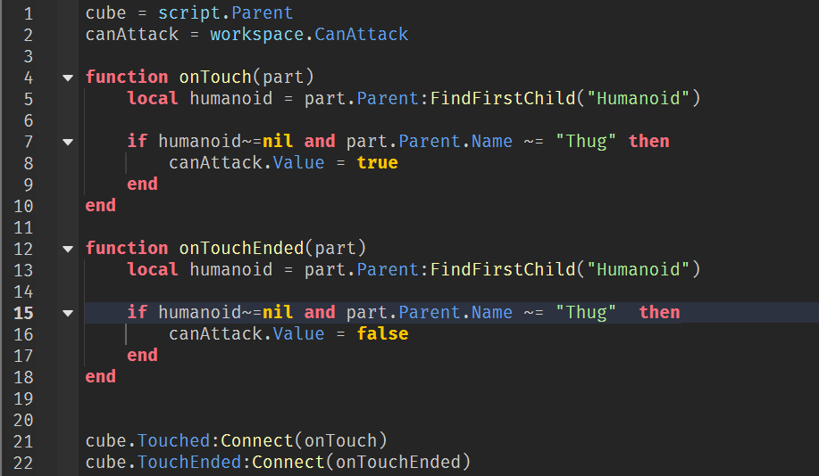Запустим игру и проверим работу скрипта. Теперь всё работает!
Работа с массивами
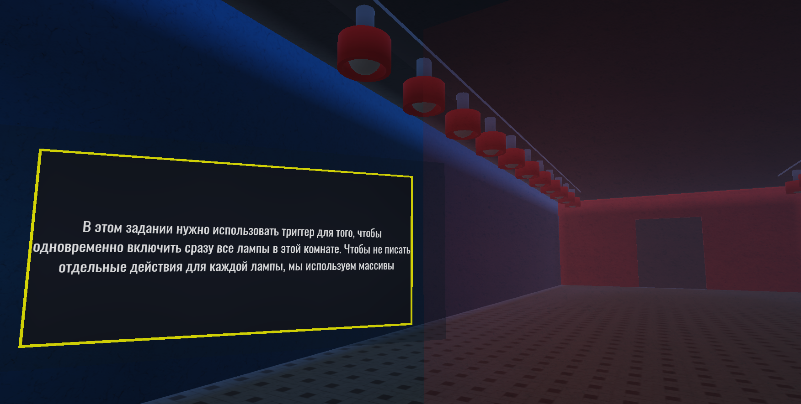В этой задаче нам необходимо написать скрипт, который будет включать и выключать лампы на входе и выходе из коллайдера. В комнате находится 22 лампы и, если мы будем решать эту задачу теми способами, которыми мы работали ранее, нам придётся написать 22 функции для каждой лампы либо написать универсальную функцию и 22 раза вызвать её для каждой лампы, что не особо эффективно. Для решения таких задач используются массивы.
Массив — структура данных, которая хранит набор однотипных элементов. Например, массив чисел (10, -2, 0, 54) или массив слов (яблоки, груши, апельсины, сливы).
Чтобы создать массив, достаточно перечислить в фигурных скобках значения его элементов:
colors_array = {"красный", "зеленый", "синий"}
numbers_array = {-2, 0, 154}
Каждый элемент массива имеет уникальный индекс (то есть свой номер), благодаря чему мы можем обращаться к каждому отдельном элементу по его индексу. Индексация массива (нумерация его элементов) в Lua начинается с 1, а не с 0, как в некоторых других языках программирования.
Чтобы обратиться к элементу массива, нужно написать название массива и в квадратных скобках указать его индекс:
colors_array[1] --эта строка обратится к 1-ому элементу массива colors_array, то есть к слову "красный"
numbers_array[3] --эта строка обратится к 3-ому элементу массива numbers_array, то есть к числу 154
Найдём коллайдер для ламп - TriggerLamps. Создадим дочерний скрипт Lampscripts и введём необходимые переменные, функции событий и их обработчики.
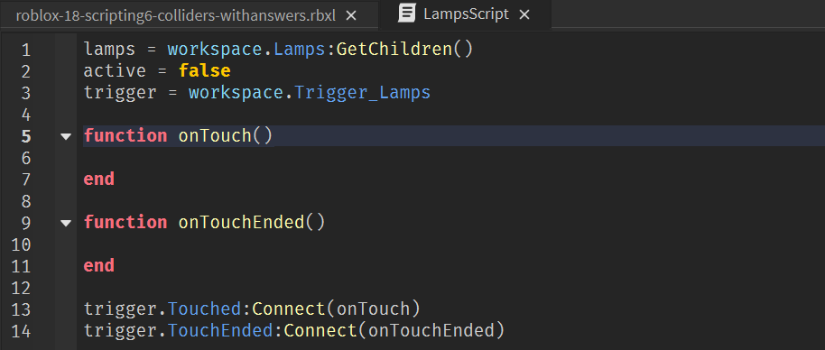Для переменной lamps мы используем специальную функцию GetChildren, она найдёт все дочерние объекты группы lamps и запишет их в массив. Теперь через эту переменную мы сможем обратиться к любой из ламп в массиве по её индексу.
Напишем функцию для включения ламп. В ней нам необходимо написать цикл, выполняющий одно и то же действие последовательно для каждой лампы в массиве lamps.
Для решения таких задач используются цикл for, который начинается со значения 1, то есть с первого объекта и работает до того момента, как значение переменной i не достигнет длины массива. Чтобы получить длину массива, используем знак # и имя массива. Такая конструкция автоматически найдёт длину массива и передаст её в программный код.
Внутри цикла мы будем обращаться к каждой лампе по индексу. На каждом новом повторении цикла значение переменной i будет увеличиваться на единицу, а значит мы будем обращаться каждый раз к следующей лампе в списке. Этот цикл должен включать лампу, то есть изменять её параметр на какое-то значение, отличное от нуля.
Запишем эту функцию:
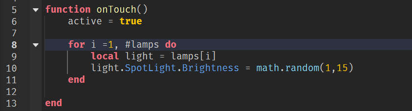Запустим игру и проверим работу функции. Теперь лампы загораются в момент, когда игрок заходит внутрь коллайдера.
Напишем функцию для выхода из коллайдера и автоматического выключения ламп. Эта функция будет такой же, как и предыдущая за исключением того, что переменная active будет устанавливаться в значение false, а яркость ламп переключаться в нулевое значение, то есть выключаться:
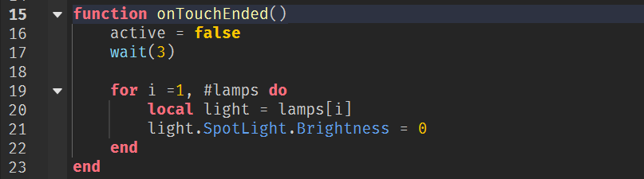Теперь можно написать дополнительную часть задачи и заставить лампочки мерцать. Для этого у нас есть переменная active - когда она включена, лампы должны случайным образом изменять свою яркость.
Создадим функцию blink, которая будет ждать случайное количество времени, выключать лампу, потом снова ждать случайное количество времени и изменять яркость лампы в диапазоне от 0.05 до 0.5:
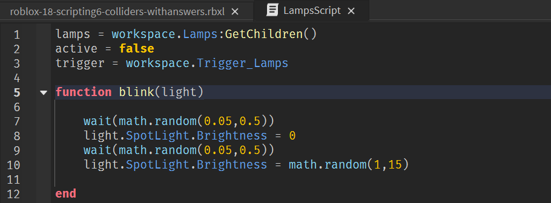Добавим вызов этой функции для каждой лампы в массиве, используя цикл while, в функцию onTouch:
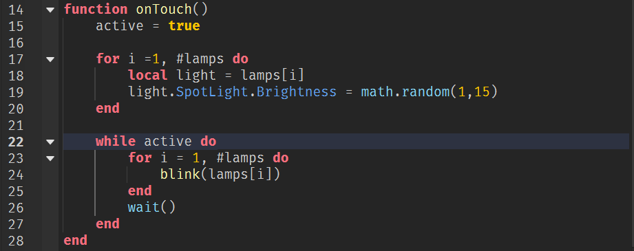Запустим игру и проверим работу кода. Программа готова!
Домашкаа 😁
Нужно повторить весь материал по программированию, изученный ранее.
Мы завершили самый сложный блок с изучением основ программирования на Lua, поэтому можно похвалить себя и немного отдохнуть ;)